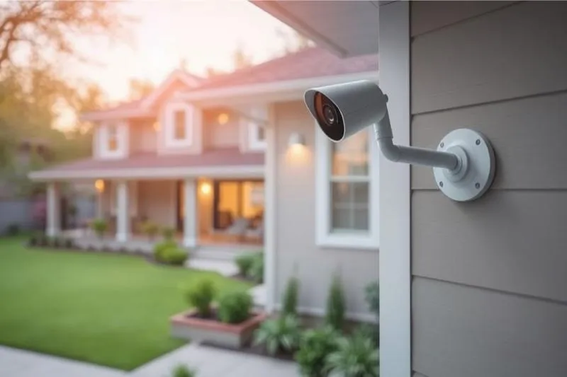

CAM 02 · RESIDENCIAL
01 / 03
Segurança residencial
Proteção para sua casa, com soluções que ajudam a acompanhar ambientes e controlar acessos.
- Câmeras
- Alarmes
- Monitoramento
- Controle de acesso
Câmeras, alarmes, monitoramento e controle de acesso, conforme a necessidade.
Quero proteger minha casa→